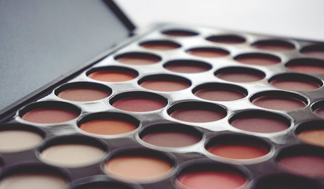
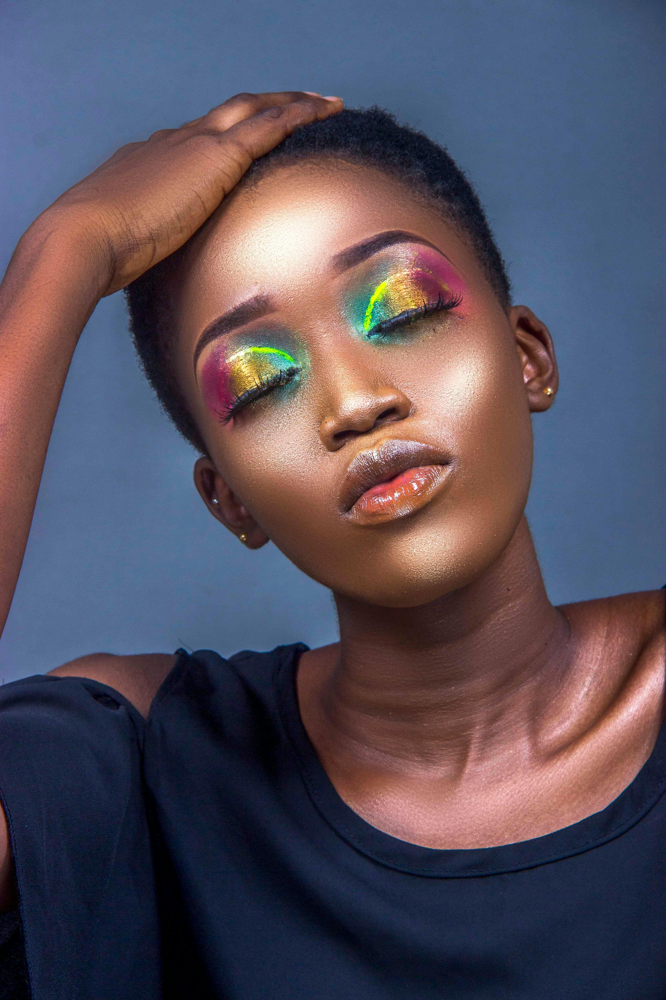
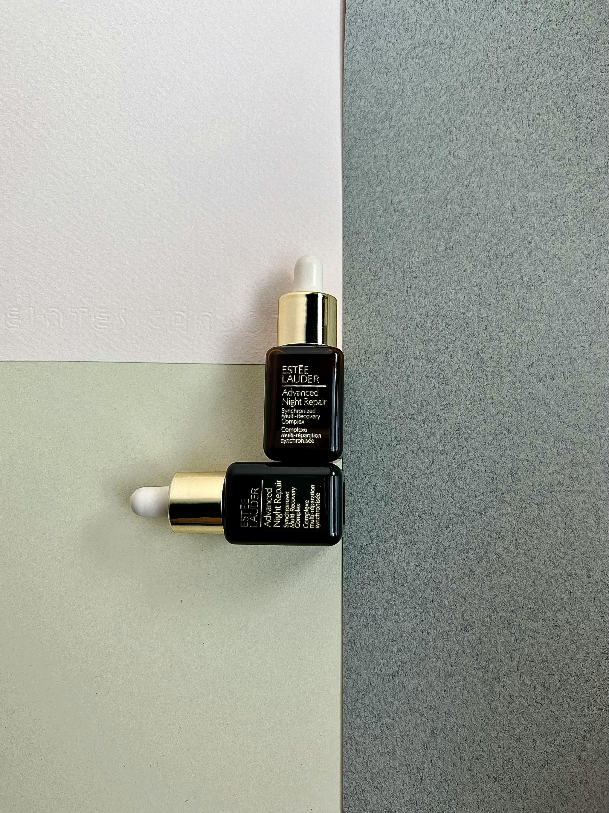

Glow with confidence:Everday Beauty Tips

Discover simple ways to highlight your natural beauty and boost your confidence!From earthly tones to bold shades, our tips help you shine everyday

Discover simple ways to highlight your natural beauty and boost your confidence!From earthly tones to bold shades, our tips help you shine everyday

Introducing the Bantu Palette, a celebration of rich, earthy tones inspired by African heritage. This versatile palette offers a range of shades perfect for creating stunning looks that embrace your unique beauty.
Have you heard about the new Bantu palette that is coming out this winter?
=======Have you heard about the new Bantu palette that is coming out? learn more about it in our latest blog post!
>>>>>>> 67a3e25 (Upload website files and styles)
Step-by-step guide to achieving a flawless look and long lasting face beat!

Learn how to take care of your skin and avoide brakouts with our expert advise. skincare before makeup is essential because it creates smooth, hydrated canvas, helps makeup last longer, and protects your skin from irritation or clogged pores. Without proper prep, makeup can look patchy, cakey or even fade quickly